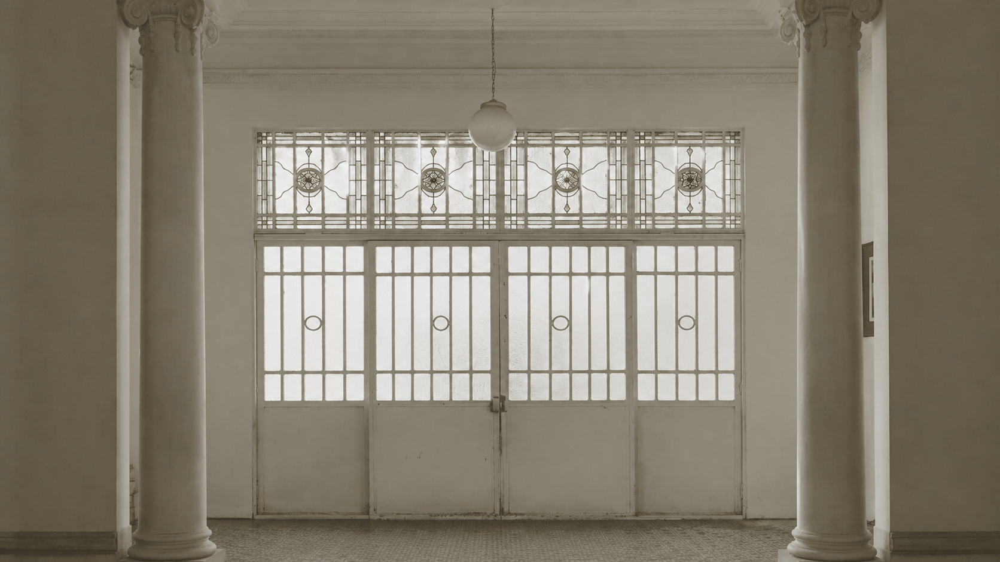
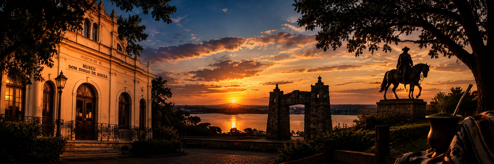

Preservando a memória visual do Pampa, a história do Grupo de Bagé e o patrimônio das artes plásticas.
Explorar AcervoOs artistas fundamentais que moldaram a identidade cultural de Bagé.
Possui formação em Farmácia, mas encontrou na Arte a sua grande paixão. Iniciou seus estudos de pintura em Florianópolis (1994).
Reside em Bagé e decidiu trilhar o caminho das artes, encontrando na aquarela a plenitude de sua criação.
Licenciada em Desenho e Plástica pela FunBa/Bagé, atua na figura humana, cerâmica, escultura e aquarela.
Coleção permanente exibindo a revolução das matrizes produzidas na década de 1950.
Conjunto documental contendo estudos, correspondências e cadernos de esboço.
Formado na década de 1950 por Glauco Rodrigues, Glênio Bianchetti, Danúbio Gonçalves e Carlos Scliar.
LER HISTÓRIA COMPLETA & EXPOSIÇÃO →Espaço dedicado à higienização e acondicionamento seguro de todo o acervo não exposto.

Clique para assistir aos registros históricos.